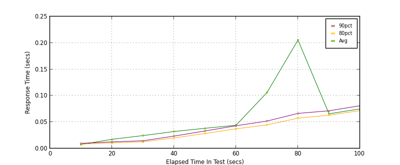
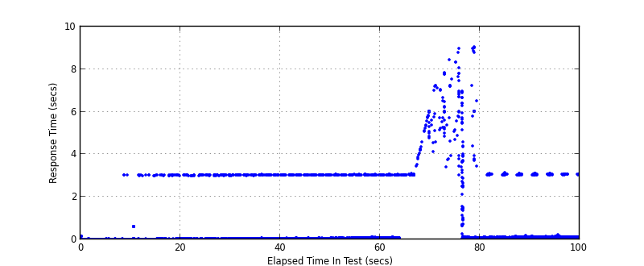
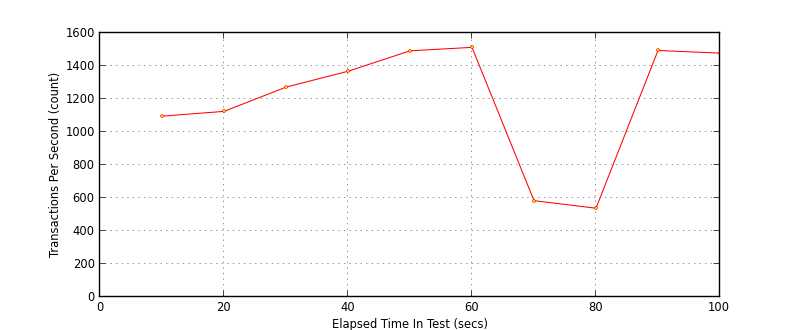
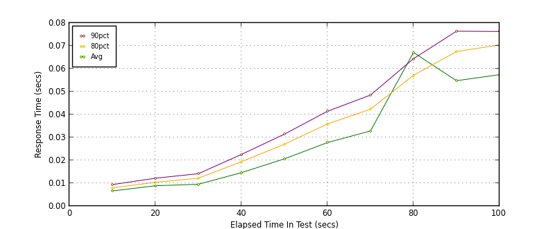
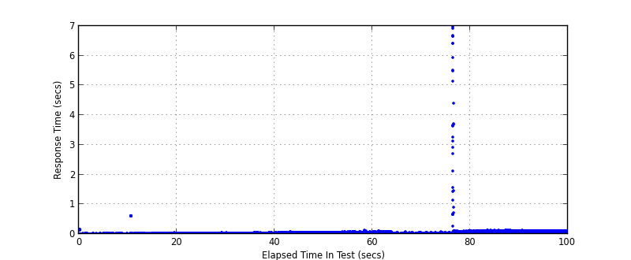
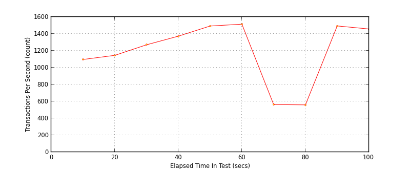

Performance Results Report
Summary
transactions: 119778
errors: 740
run time: 100 secs
rampup: 100 secs
test start: 2016-12-07 17:25:15
test finish: 2016-12-07 17:26:55
time-series interval: 10 secs
workload configuration:
| group name | threads | script name |
|---|
| user_group-1 | 20 | v_post.py |
| user_group-2 | 20 | v_post.py |
| user_group-3 | 20 | v_post.py |
| user_group-4 | 20 | v_post.py |
| user_group-5 | 20 | v_post.py |
| user_group-6 | 20 | v_post.py |
All Transactions
Transaction Response Summary (secs)
| count | min | avg | 80pct | 90pct | 95pct | max | stdev |
|---|
| 119778 | 0.004 | 0.051 | 0.047 | 0.060 | 0.070 | 9.041 | 0.307 |
Interval Details (secs)
| interval | count | rate | min | avg | 80pct | 90pct | 95pct | max | stdev |
|---|
| 1 | 10966 | 1096.60 | 0.004 | 0.008 | 0.008 | 0.010 | 0.011 | 3.024 | 0.050 |
| 2 | 11258 | 1125.80 | 0.004 | 0.017 | 0.011 | 0.013 | 0.014 | 3.026 | 0.159 |
| 3 | 12726 | 1272.60 | 0.004 | 0.024 | 0.013 | 0.015 | 0.017 | 3.031 | 0.209 |
| 4 | 13688 | 1368.80 | 0.005 | 0.032 | 0.020 | 0.023 | 0.027 | 3.066 | 0.226 |
| 5 | 14921 | 1492.10 | 0.005 | 0.038 | 0.028 | 0.033 | 0.037 | 3.045 | 0.224 |
| 6 | 15139 | 1513.90 | 0.005 | 0.044 | 0.037 | 0.043 | 0.049 | 3.067 | 0.214 |
| 7 | 5840 | 584.00 | 0.007 | 0.106 | 0.045 | 0.052 | 0.060 | 6.041 | 0.536 |
| 8 | 5388 | 538.80 | 0.009 | 0.205 | 0.057 | 0.067 | 0.079 | 9.041 | 0.968 |
| 9 | 14948 | 1494.80 | 0.008 | 0.066 | 0.063 | 0.071 | 0.080 | 3.132 | 0.209 |
| 10 | 14783 | 1478.30 | 0.010 | 0.075 | 0.072 | 0.081 | 0.091 | 3.108 | 0.221 |
Graphs
Response Time: 10 sec time-series

Response Time: raw data (all points)

Throughput: 5 sec time-series

Custom Timer: POST
Timer Summary (secs)
| count | min | avg | 80pct | 90pct | 95pct | max | stdev |
|---|
| 119645 | 0.004 | 0.029 | 0.048 | 0.059 | 0.070 | 6.966 | 0.072 |
Interval Details (secs)
| interval | count | rate | min | avg | 80pct | 90pct | 95pct | max | stdev |
|---|
| 1 | 10966 | 1096.60 | 0.004 | 0.007 | 0.008 | 0.009 | 0.011 | 0.163 | 0.004 |
| 2 | 11455 | 1145.50 | 0.004 | 0.009 | 0.010 | 0.012 | 0.014 | 0.616 | 0.020 |
| 3 | 12701 | 1270.10 | 0.004 | 0.010 | 0.012 | 0.014 | 0.016 | 0.056 | 0.004 |
| 4 | 13722 | 1372.20 | 0.004 | 0.015 | 0.019 | 0.023 | 0.025 | 0.061 | 0.006 |
| 5 | 14921 | 1492.10 | 0.005 | 0.021 | 0.027 | 0.031 | 0.035 | 0.079 | 0.008 |
| 6 | 15143 | 1514.30 | 0.005 | 0.028 | 0.036 | 0.041 | 0.047 | 0.123 | 0.010 |
| 7 | 5625 | 562.50 | 0.009 | 0.033 | 0.042 | 0.048 | 0.053 | 0.106 | 0.012 |
| 8 | 5599 | 559.90 | 0.009 | 0.067 | 0.057 | 0.064 | 0.071 | 6.966 | 0.317 |
| 9 | 14935 | 1493.50 | 0.010 | 0.055 | 0.067 | 0.076 | 0.084 | 0.145 | 0.016 |
| 10 | 14578 | 1457.80 | 0.015 | 0.057 | 0.070 | 0.076 | 0.081 | 0.125 | 0.015 |
Graphs
Response Time: 10 sec time-series

Response Time: raw data (all points)

Throughput: 10 sec time-series
